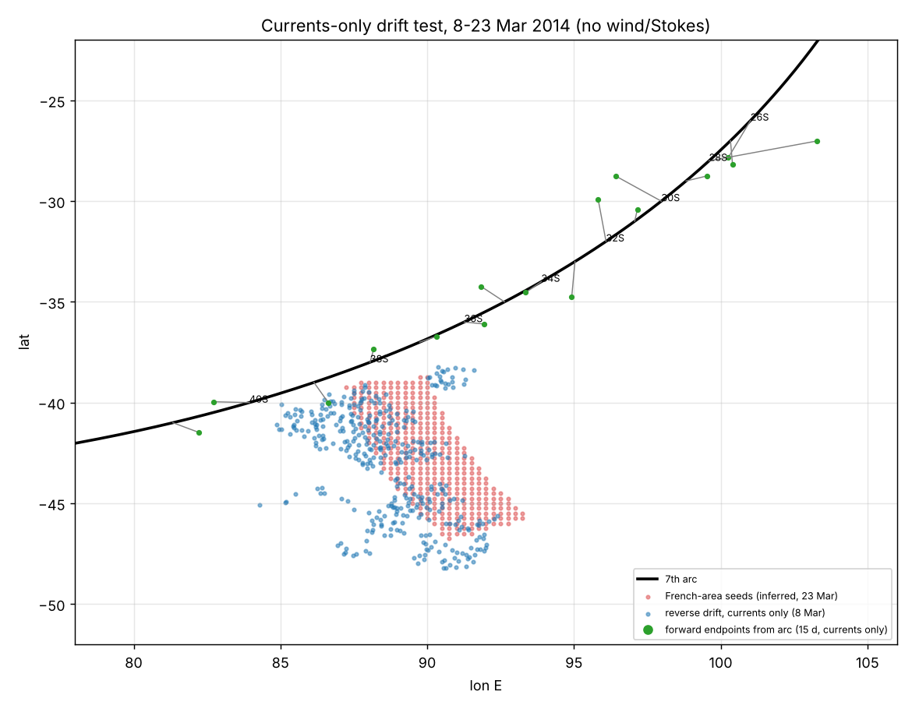

Ocean currents (GLORYS12V1 via Copernicus Marine), the debris reverse-drift density, and the three follow-up diagnostics.
Newer results: Task 10 (origin of the western focus), the Task 11 drifter hindcast, the forward release from 24.5–41°S, 80–100°E and the gyre/mean-flow check are on Drift diagnostics.
Surface currents, March 2014 – July 2015
Monthly mean and mid-month snapshot, 17 months, with a floating-object drift mode. Daily 0.494 m currents averaged to 1/3°. March 2014 starts 8 March. Winds are NCEP/NCAR Reanalysis 1 (about 1.9°).
Combined reverse-drift density (baseline, assigned classes)
debris find sites (assumed geocodes, 32 items at 21 sites)
Hover for density.
Depends on: assumed find coordinates (ASSUMED_GEOCODE), the assigned leeway class table, daily winds, no explicit Stokes, absorbing coasts and the offshore launch rule. No parameter was chosen by agreement with the 7th arc.
Corrected 8 October.Only 21 of the 32 items contribute to this field, across 18 of the 23 distinct date windows. The legend above counts the find-site markers, not the density’s inputs, and the card previously gave no contributing count at all. TASK_021 Part A also confirmed upstream smoothing of the field before it is written, so the peak marked at 35.25°S, 55.75°E is the maximum of a smoothed field, not of the raw one — the atlas asserted the opposite for a day. All 11 exclusions are identification-based — not trajectory conditioning, which retires one circularity concern. But 10 of the 11 are Madagascar items, so the mechanism is not geographic while the effect is: one region is almost wholly absent from the field, and the markers plotted here include items that do not inform it. TASK_021 is testing what this peak represents, and measuring how far it moves if the excluded items are put back.
Currents-only forward drift test, 8–23 Mar 2014
From reverse_drift_forward_summary.csv: 15 days of currents-only forward drift (no wind or Stokes) from arc points 26–41°S. Lines join each arc point to its endpoint.

Your figure, with the French-area seeds and the reverse drift.
Currents-only test. Endpoints move 32–204 nm from the arc point in 15 days; the minimum gap to the seed field is 40–970 nm (the table). No wind slip is included, which the leeway audit says is the main missing term.
Task 7: recovery-delay ceiling
Share of arrivals already later than the find window at zero delay. A delay can only push arrivals later, so this is a hard ceiling. Range spans the saved leeway grid.
Window tolerance
Task 8: leeway class support
Literature audit only. Classes unchanged.
Task 9: independent-seed null tests complete, 90 of 90
30 runs each of shuffled regions, random coast and observed, 32 items × 500 particles, all physics and seeds as registered. Closure passed 256/256 and the saved N2 baseline reproduced exactly (Codex qualification).
Peak of the combined density, every run:
Peak spread (all runs, grid 0.5°)
Fixed original run among each null
Empirical midranks of the single original N2 run, not averages over the new observed seeds.
Reading. Scrambling find locations leaves the peak where it was: every null peak is within 500 km of the original, and 96.7% of shuffled-region peaks are within 250 km. The observed replicates are more spread than the shuffled nulls and drift east (mean 58.05°E). The western focus comes from the frozen dynamics, launch and density method and survivor conditioning, not from the find locations. The exact 55.75°E is not stable.
Arc distance. Codex's peak-to-arc distance (1,003–1,433 km) uses the arc file, which stops at 64.46°E. Measured to the full ring (my circle fit), peaks are 726–1,059 km inside it, mean about 920 km, with a handful under 1,000 km. Either way no peak is near the ring.
Not isolated. The test does not say which component causes the focus, and it does not show the finds are uninformative in general. Results depend on assumed coordinates, assigned classes and divergence, daily NCEP winds, N2 launches, absorbing coasts, diffusion and region-balanced smoothing. Explicit Stokes stays null.
Open caveats
Find coordinates and date intervals are assumed.
Class slip and divergence are my assumptions. The audit finds C3 unsupported as a measured class and C2 untestable.
Daily NCEP winds and no Stokes (WAVERYS not acquired). ERA5 not yet used.
Beach residence, refloat and detection delay are not modeled; Task 7 delays are post-hoc shifts only.